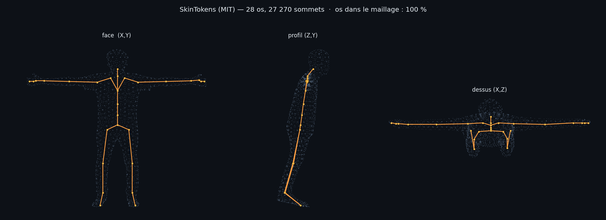
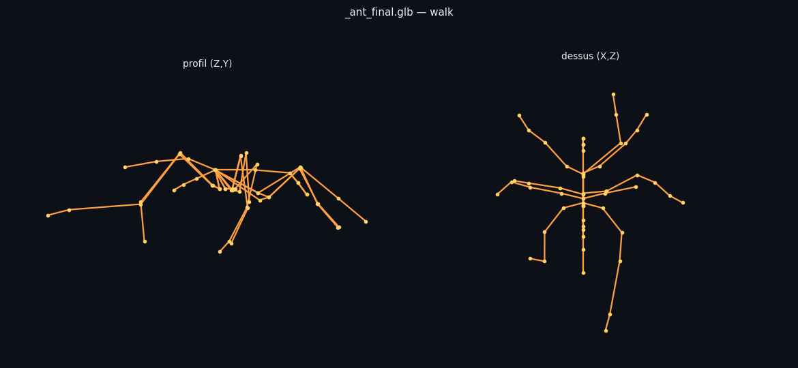
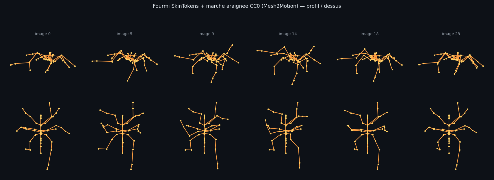
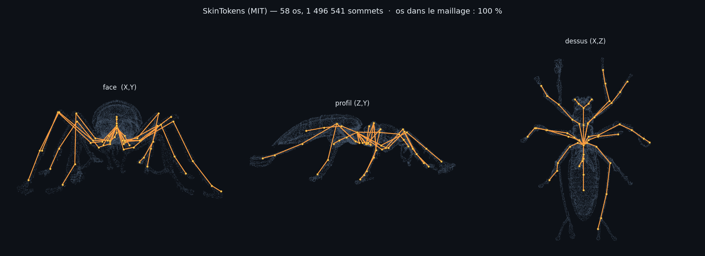
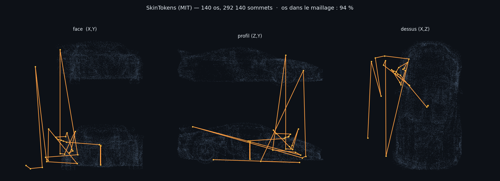

Rendu calculé hors navigateur, directement depuis les fichiers GLB : positions des os composées depuis la hiérarchie glTF, sommets projetés sous trois angles. Aucune dépendance à WebGL.

Colonne vertébrale, clavicules, bras jusqu'aux mains, bassin, jambes et pieds. Hiérarchie à racine unique (27 segments pour 28 os). C'est un rig humanoïde standard, directement animable.


Première animation de créature produite sans aucun maillon sous licence
restrictive : rig SkinTokens (MIT), mouvement Mesh2Motion (CC0), retargeting
maison. Les clips d'araignée pilotent 8 pattes, la fourmi en a 6 : la paire arrière
(leg_d) est abandonnée, les 6 restantes gardent leur alternance.
Limite assumée : l'amplitude est modeste et le rig est visiblement désordonné —
voir la section suivante, c'est le rig qu'il faut corriger, pas le mouvement.

Six pattes articulées, antennes, abdomen — tous les os dans le maillage.
Mais la mesure contredit l'impression : profondeurs de chaînes
[4,4,4,5,5,5,6,6,6,7,7,7,7], des comptes impairs — les pattes gauches
et droites n'ont pas le même nombre d'articulations.
Le rig est en cause, pas le maillage — vérifié en mesurant les deux :
| asymétrie du maillage | médiane 0,33 % · p95 1,77 % |
| asymétrie du rig | médiane 2,71 % · pire 16,4 % · 31 os sur 40 déviants |

Structurellement valide — arbre correct, JOINTS_0 et
WEIGHTS_0 présents — mais les os traversent le modèle sans suivre aucune
forme. Attendu : le moteur est entraîné sur des personnages articulés, et son propre
pont annonce qu'il rejette les objets mécaniques. C'était une erreur de choix de test
de ma part, pas un défaut du moteur.
Ce que ces deux essais établissent : le rig SkinTokens fonctionne de bout en bout sur Modal, et il faut aiguiller selon le type d'objet — un véhicule ne doit pas partir au rig automatique.